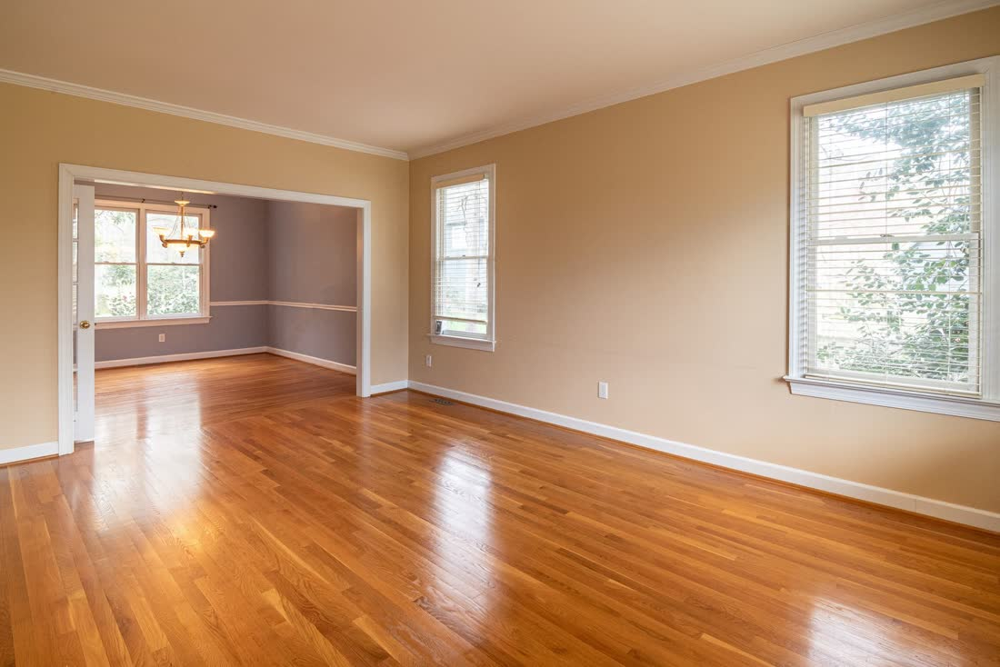
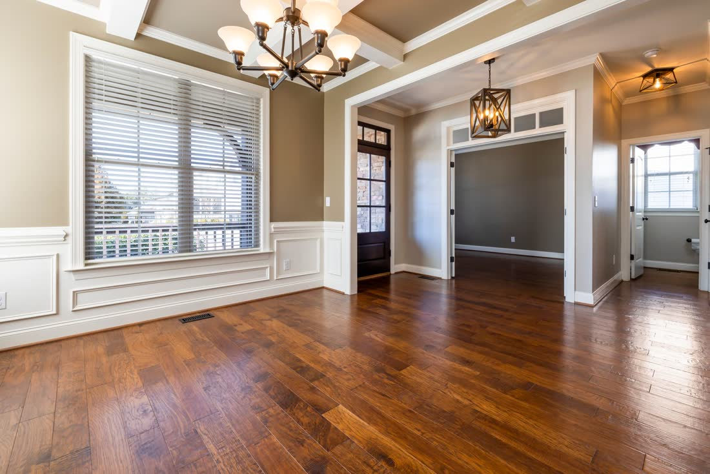
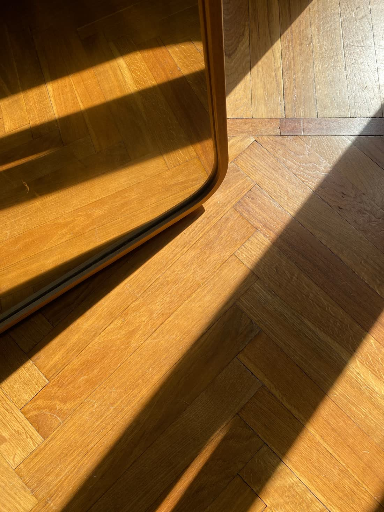
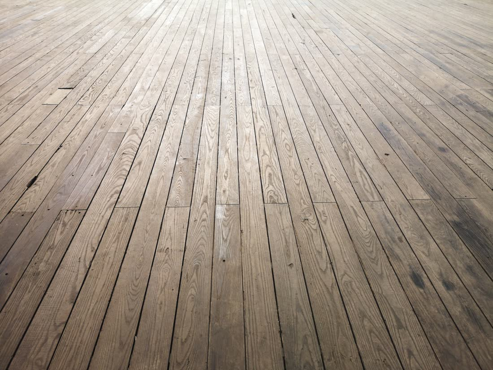
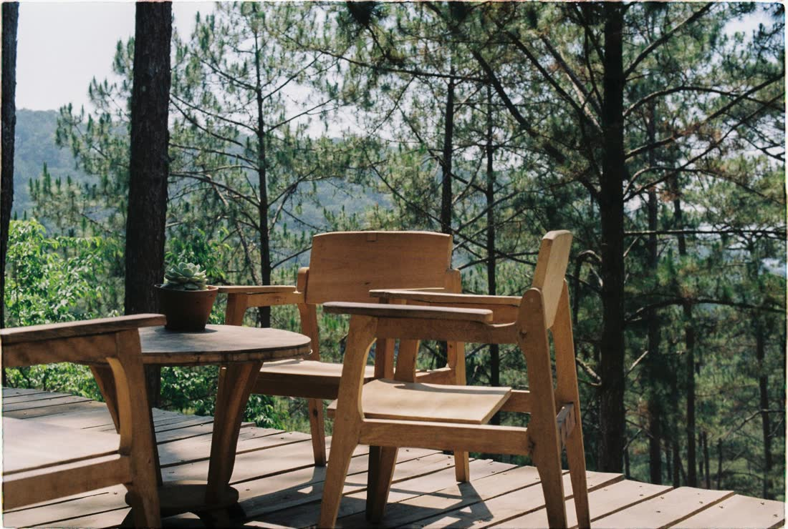
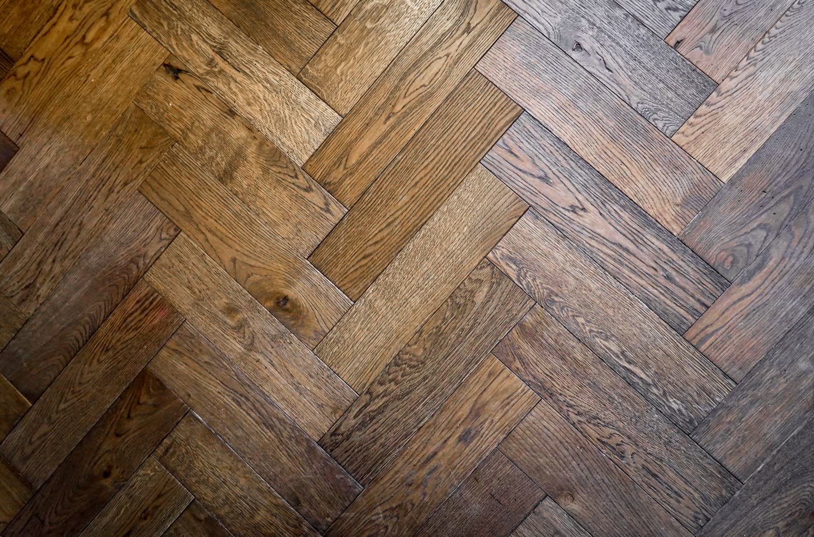
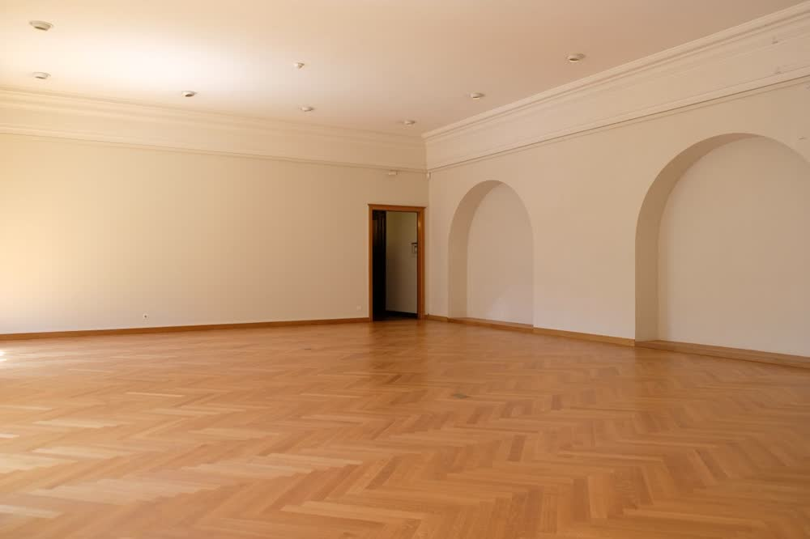
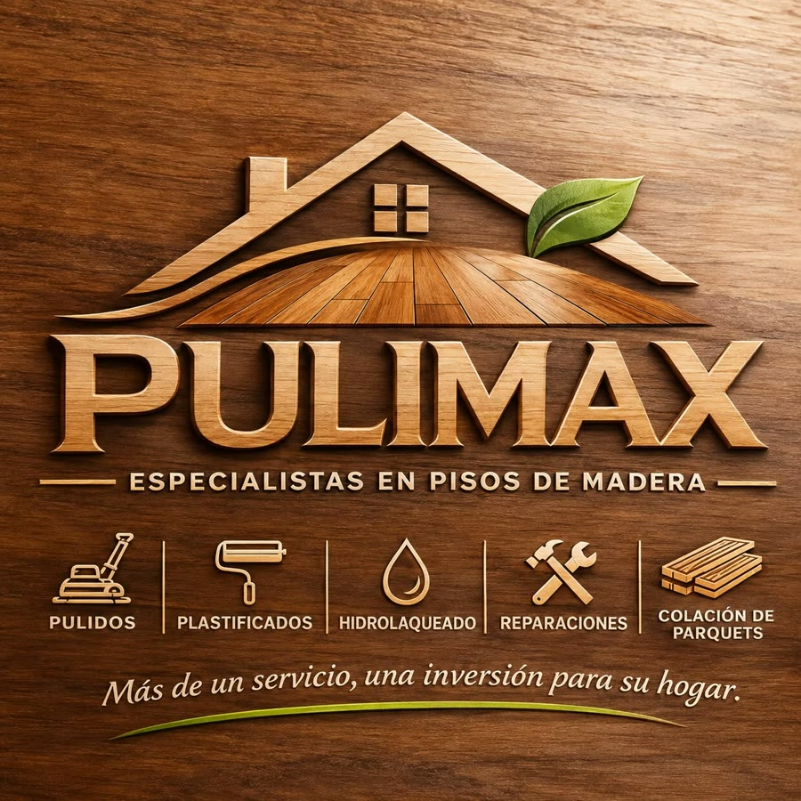

Pisos de madera · especialistas · CABA y GBA
Tu piso, como nuevo.
Pulido, plastificado e hidrolaqueado de pisos de madera en Capital y Gran Buenos Aires. También reparamos tablas dañadas y colocamos decks y entablonados.
Presupuesto sin compromiso · Trabajo garantizado
- Trabajo garantizado
- Presupuesto sin compromiso
- Atención personalizada
- CABA y GBA
Realzamos la belleza de tus espacios
Cinco trabajos, un mismo oficio: el piso.
-

Recuperamos el brillo natural de tus pisos de madera, mármol, granito y más. Sacamos rayas, manchas y el gris del desgaste hasta llegar a la madera sana.
Consultar por pulido -

Protección y mayor resistencia para el uso de todos los días. Elegís el acabado: brillante, que refleja la luz, o mate, más natural.
Consultar por plastificado -

Acabado de alta resistencia al agua, ideal para mayor durabilidad. Una buena opción para cocinas, pasillos y ambientes de mucho tránsito.
Consultar por hidrolaqueado -

Arreglos, nivelación y mantenimiento de pisos dañados o desgastados: tablas flojas, que suenan, rotas o levantadas por humedad.
Consultar por una reparación -

Instalación de decks de madera y entablonados para interiores y exteriores, y colocación de parquets.
Consultar por una colocación
Probá el acabado
Pasale la pulidora a la muestra.
Arrastrá el disco sobre el parquet gastado para ver cómo vuelve la madera. Después elegí el acabado y compará cómo refleja la luz.

Arrastrá para pulir
Presupuesto sin compromiso
Contanos tu piso y te pasamos el presupuesto.
Cuantos más datos, más preciso. Si no sabés los metros, poné largo y ancho de cada ambiente y lo calculamos acá.
Cómo trabajamos
De la primera foto al piso terminado.
- 1
Nos escribís
Por WhatsApp, con fotos del piso y los ambientes que querés trabajar.
- 2
Presupuesto
Te pasamos el presupuesto sin compromiso y te recomendamos el acabado según el uso.
- 3
Coordinamos
Acordamos el día y cumplimos con los plazos que te damos.
- 4
Tu piso, como nuevo
Entregamos el trabajo terminado y garantizado.

“Más que pisos,
creamos ambientes.”
¿Por qué elegirnos?
Lo que cuidamos en cada piso.
- Trabajos garantizadosRespondemos por lo que hacemos.
- Atención personalizadaHablás con quien va a hacer el trabajo.
- Materiales de primera calidadPara que el acabado dure.
- Cumplimiento en los plazosEl día que acordamos, estamos.
- Experiencia y compromisoCon tu casa y con el resultado.
Adentro y afuera
Decks y entablonados para la galería, el patio o el balcón.
Instalación de decks de madera y entablonados para interiores y exteriores. Contanos el espacio y armamos la propuesta.
Consultar por un deckPreguntas frecuentes
Antes de escribirnos.
¿Qué diferencia hay entre plastificado e hidrolaqueado?
El plastificado protege y le da más resistencia al piso, con acabado brillante o mate. El hidrolaqueado es una laca al agua de alta resistencia, ideal para más durabilidad. Te recomendamos uno u otro según el ambiente y el uso que le das.
¿Pulen solo pisos de madera?
No. También recuperamos el brillo de pisos de mármol, granito y más.
¿En qué zonas trabajan?
En Ciudad de Buenos Aires y Gran Buenos Aires. Decinos tu barrio o localidad cuando nos escribas.
¿El presupuesto me compromete?
No. El presupuesto es sin compromiso: nos contás qué necesitás y te pasamos el valor.
¿Cuánto tarda el trabajo?
Depende de los metros, del estado del piso y del acabado que elijas. Te lo decimos junto con el presupuesto y cumplimos con ese plazo.
¿Qué les mando para presupuestar?
Fotos del piso con buena luz, los ambientes y sus medidas aproximadas, y tu barrio. Podés armarlo arriba en “Contanos tu piso” y se envía solo por WhatsApp.
¿El trabajo tiene garantía?
Sí. Todos nuestros trabajos son garantizados.

Más de un servicio, una inversión para su hogar.
Pisos que hablan de tu hogar.
11 2616-9382- Mailmaxpuli66@gmail.com
- ZonaCABA y Gran Buenos Aires